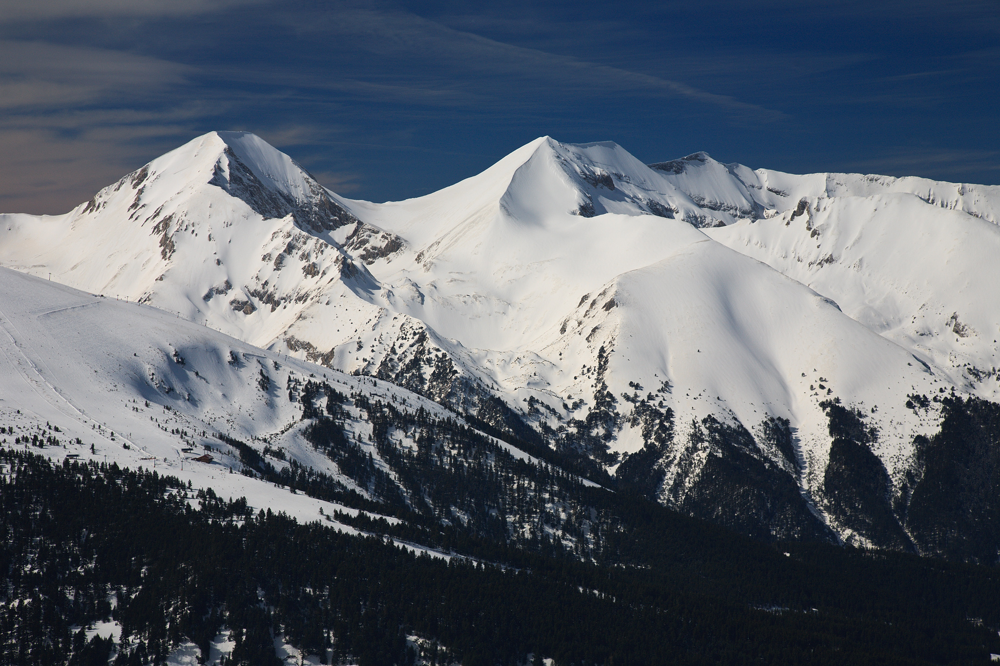

Vihren is the highest peak of Bulgaria's Pirin Mountains. Reaching 2,914 metres (9,560 ft),

Begining of a wonderfull adventure
Don't confuse the hike with the destination. The hike is about the sounds, the smells, the sights. It's a complete sensory experience... But yes, that waterfall is also pretty freaking awesome.